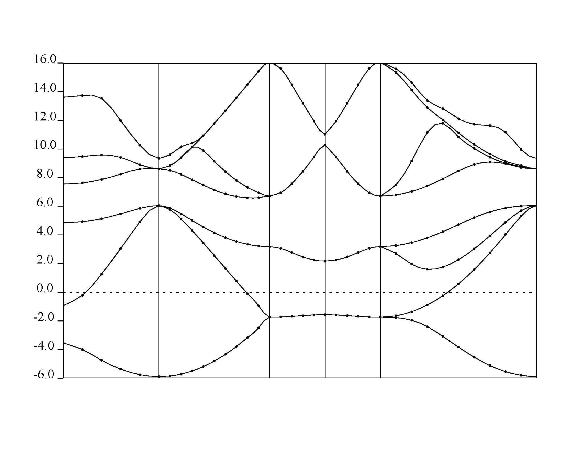

Band Calculation
-
Input file for our non-self-consistent band calculation is si.bands.in
-
Notice the K_PATH in the bottom of the file, which provides the symmetry direction along which we want to calculate the bands.
-
Now run
pw.xto calculate bands:~/QE/qe-6.5MaX/bin/pw.x < si.bands.in > si.bands.out -
Create the bands.in input file
-
Run
bands.x:~/QE/qe-6.5MaX/bin/bands.x < bands.in > bands.out -
Next run
~/QE/qe-6.5MaX/bin/plotband.xYou will see an interactive terminal, provide in the information correctly.
$ ~/QE/qe-6.5MaX/bin/plotband.x
Input file > bands.dat
Reading 8 bands at 36 k-points
Range: -5.8840 16.0560eV Emin, Emax > -6 16
high-symmetry point: 0.5000 0.5000 0.5000 x coordinate 0.0000
high-symmetry point: 0.0000 0.0000 0.0000 x coordinate 0.8660
high-symmetry point: 0.0000 0.0000 1.0000 x coordinate 1.8660
high-symmetry point: 0.0000 0.5000 1.0000 x coordinate 2.3660
high-symmetry point: 0.0000 1.0000 1.0000 x coordinate 2.8660
high-symmetry point: 0.0000 0.0000 0.0000 x coordinate 4.2802
output file (gnuplot/xmgr) > band.gnuplot
bands in gnuplot/xmgr format written to file band.gnuplot
output file (ps) > band.ps
Efermi > 0
deltaE, reference E (for tics) 2 0
SPLINT WARNING: xfit(i) > xspline(nspline) 1.86602569 1.86602557
SPLINT WARNING: xfit(i) > xspline(nspline) 1.86602569 1.86602557
SPLINT WARNING: xfit(i) > xspline(nspline) 1.86602569 1.86602557
SPLINT WARNING: xfit(i) > xspline(nspline) 1.86602569 1.86602557
SPLINT WARNING: xfit(i) > xspline(nspline) 1.86602569 1.86602557
SPLINT WARNING: xfit(i) > xspline(nspline) 1.86602569 1.86602557
SPLINT WARNING: xfit(i) > xspline(nspline) 1.86602569 1.86602557
SPLINT WARNING: xfit(i) > xspline(nspline) 1.86602569 1.86602557
bands in PostScript format written to file band.ps
- You will have band.ps with band plots.
